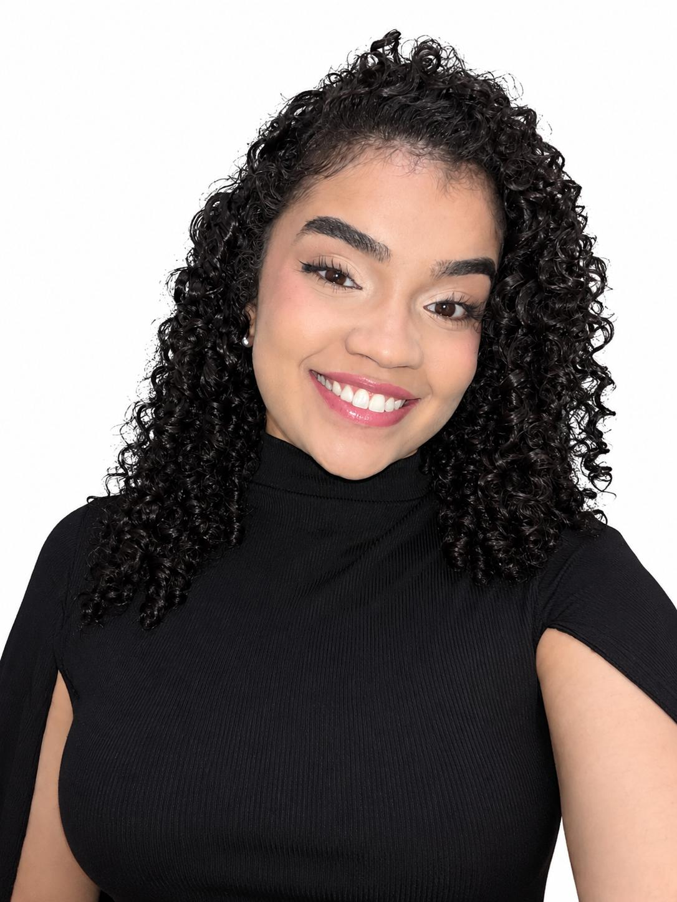
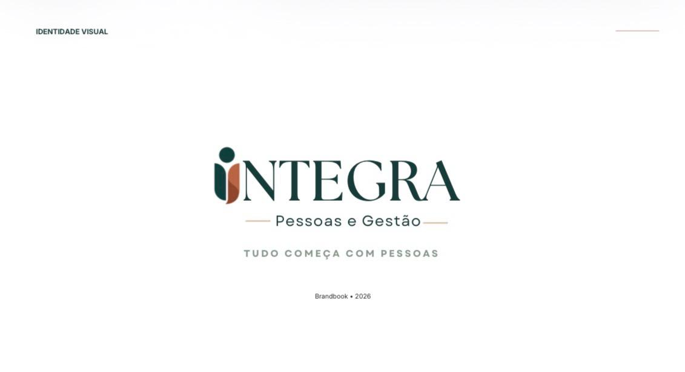
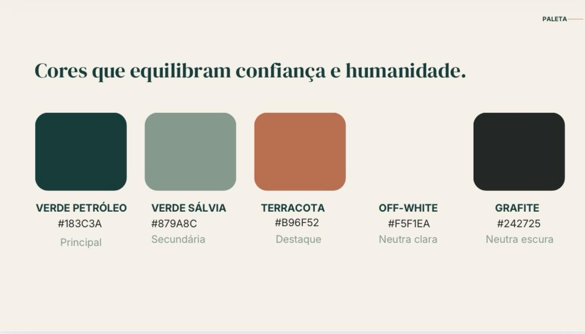
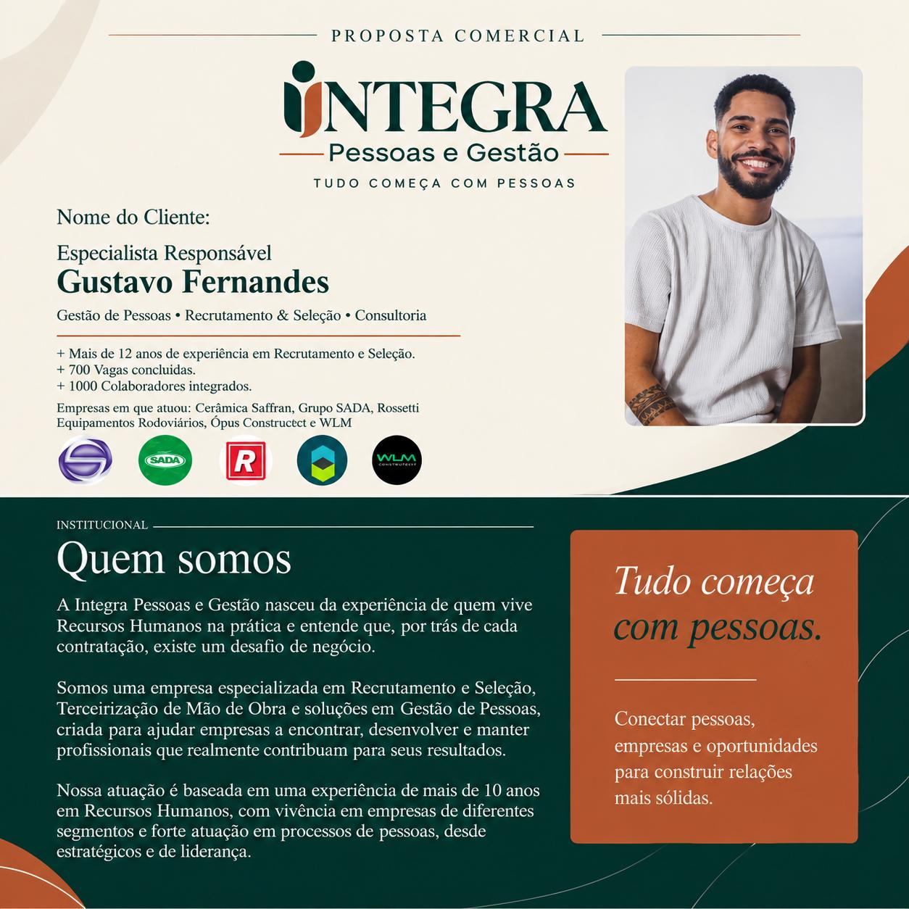
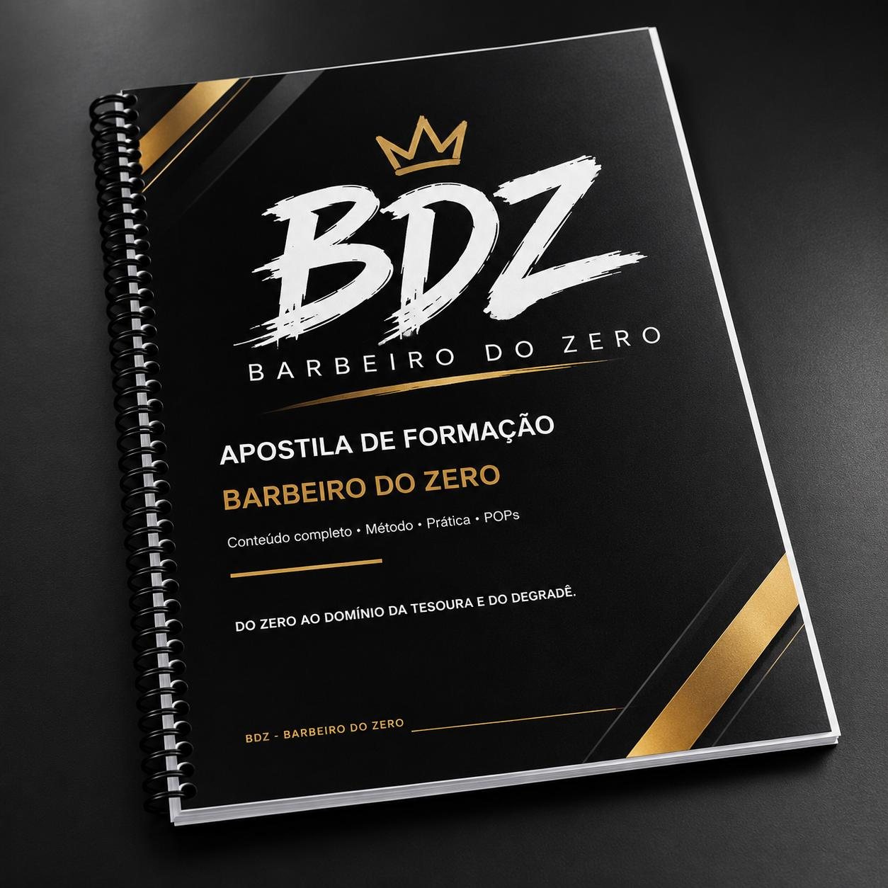
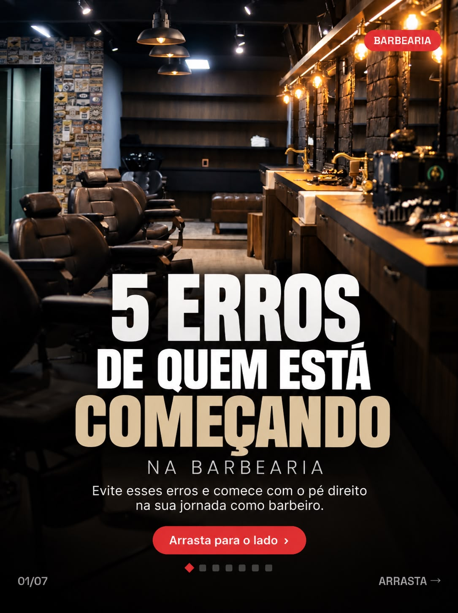

Planejamento estratégico
Organização de objetivos, temas, formatos e direcionamento da comunicação.
Sou Franciely Fernandes. Desenvolvo projetos de comunicação que conectam estratégia, conteúdo e identidade visual para fortalecer a presença das marcas.

Marketing vai além de estar presente nas redes. É entender a marca, organizar a mensagem e criar uma comunicação coerente com seus objetivos.
Minha atuação reúne planejamento de conteúdo, organização da presença digital, criação de materiais de comunicação e desenvolvimento de apresentações comerciais e institucionais.
Gosto de olhar para cada projeto de forma estratégica: entender o que a marca precisa comunicar, para quem e com qual intenção — e então transformar isso em entregas visuais e conteúdos claros.
“Uma boa comunicação não começa no layout. Começa em entender o que precisa ser dito.”
Frentes de trabalho desenvolvidas a partir das necessidades de cada projeto.
Organização de objetivos, temas, formatos e direcionamento da comunicação.
Ideias, pautas, carrosséis, roteiros e conteúdos alinhados à proposta da marca.
Estruturação de frequência, formatos e objetivos para manter consistência.
Conceito, direção visual e sistemas gráficos para fortalecer a apresentação da marca.
Apresentações comerciais, brandbooks e materiais de apoio à comunicação.
Estruturação de informações, linguagem e pontos de contato da marca.
Do desenvolvimento de marca à estratégia de conteúdo: projetos com entregas diferentes e um mesmo cuidado com intenção e clareza.



Desenvolvimento integral da identidade visual e da apresentação comercial da Integra, desde a concepção até a organização das entregas finais.
Objetivo: construir uma marca coerente e uma apresentação capaz de comunicar os serviços com clareza e profissionalismo.


Projeto voltado à comunicação de um profissional da barbearia e à apresentação de seu curso para quem deseja iniciar na profissão.
Objetivo: organizar a comunicação do perfil e apresentar o conteúdo do curso de forma clara, atrativa e consistente.
Os projetos são apresentados pelas entregas realizadas. Não são atribuídos resultados numéricos ou indicadores que não tenham sido documentados.
Um fluxo de trabalho que ajuda a manter coerência entre intenção, mensagem e execução.
Conhecer a marca, o público, o contexto e a necessidade do projeto.
Definir objetivos, mensagem, linguagem e caminhos de comunicação.
Transformar o direcionamento em conteúdo, materiais e soluções visuais.
Revisar as entregas e manter consistência na apresentação final.
Disponível para conversar sobre projetos de marketing, conteúdo, comunicação e identidade visual.